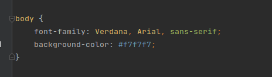
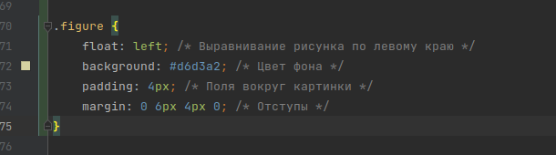
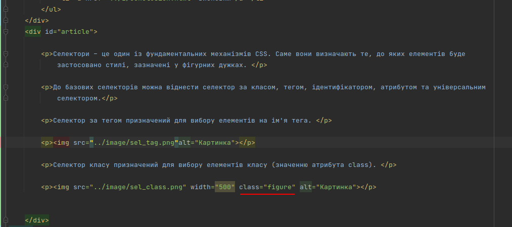

Селектори – це один із фундаментальних механізмів CSS. Саме вони визначають те, до яких елементів буде застосовано стилі, зазначені у фігурних дужках.
До базових селекторів можна віднести селектор за класом, тегом, ідентифікатором, атрибутом та універсальним селектором.
Селектор за тегом призначений для вибору елементів на ім'я тега.

Селектор класу призначений для вибору елементів класу (значенню атрибута class).

